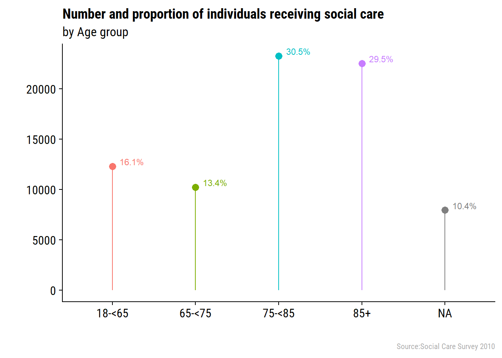
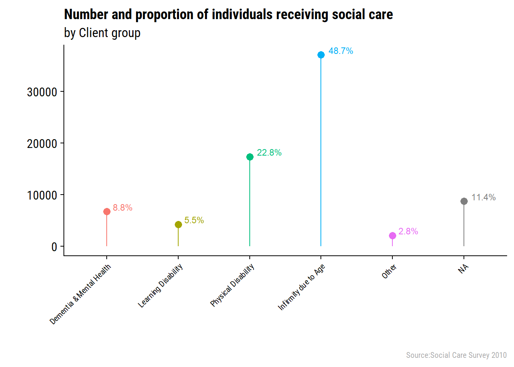

Last updated: 2018-03-29
Code version: 6374a02
On this page I will explore the 2010 social care data using the soc_care10 object created in import and tidy the data.
skimr package to explore descriptive stats of the dataset.library(dplyr)
library(magrittr)
library(ggplot2)
library(ggalt)
library(ggstance)
library(cowplot)
library(skimr)
library(extrafont)
library(kableExtra)
theme_set(theme_cowplot(font_family = "Roboto Condensed"))
ubdc_palette <- c("#13AFD6", "#E6E600", "#F07329", "#35B14E", "#D7509A", "#2165AF",
"#BCD032","#866BAC", "#545A5D", "#7A8082", "#E2D988", "#628DB7",
"#929B9A", "#93B8DA", "#31649B", "#FBF8D0", "#ACB2B4", "#D1DAE2")The data object soc_care10 was created in the import and tidy the data analysis. I’ll load the results of that into memory now. This is the cleaned dataset for that year.
load("/GitHub/Scottish_Social_Care_Open_Data/output/clean_data/soc_care10.RData")First look at the descriptives
soc_care10 %>% skim %>% kableSkim summary statistics
n obs: 76202
n variables: 16
Variable type: character
| variable | missing | complete | n | min | max | empty | n_unique |
|---|---|---|---|---|---|---|---|
| client_id | 0 | 76202 | 76202 | 3 | 9 | 0 | 76157 |
Variable type: factor
| variable | missing | complete | n | n_unique | top_counts | ordered |
|---|---|---|---|---|---|---|
| age_grp | 7939 | 68263 | 76202 | 4 | 75-: 23248, 85+: 22499, 18-: 12297, 65-: 10219 | FALSE |
| client_grp | 8719 | 67483 | 76202 | 5 | Inf: 37100, Phy: 17347, NA: 8719, Dem: 6720 | FALSE |
| council | 0 | 76202 | 76202 | 32 | Gla: 7869, Fif: 5171, Edi: 4600, Abe: 4284 | FALSE |
| gender | 7925 | 68277 | 76202 | 2 | Fem: 45893, Mal: 22384, NA: 7925 | FALSE |
| hc_client | 0 | 76202 | 76202 | 2 | Yes: 65515, No: 10687, NA: 0 | FALSE |
| housing_supp | 0 | 76202 | 76202 | 2 | No: 66656, Yes: 9546, NA: 0 | FALSE |
| housing_type | 1935 | 74267 | 76202 | 3 | Mai: 60086, Sup: 9646, Oth: 4535, NA: 1935 | FALSE |
| la_hrs | 0 | 76202 | 76202 | 13 | Zer: 28319, 2-4: 11357, 1-2: 8290, 10-: 6510 | FALSE |
| laundry | 0 | 76202 | 76202 | 2 | No: 72522, Yes: 3680, NA: 0 | FALSE |
| living_arr | 27418 | 48784 | 76202 | 2 | Liv: 31537, NA: 27418, Oth: 17247 | FALSE |
| multi_staff | 0 | 76202 | 76202 | 2 | Sin: 71287, 2 o: 4915, NA: 0 | FALSE |
| pri_hrs | 0 | 76202 | 76202 | 13 | Zer: 57566, 2-4: 3636, 10-: 3352, 6-8: 2804 | FALSE |
| shopping | 0 | 76202 | 76202 | 2 | No: 70645, Yes: 5557, NA: 0 | FALSE |
| total_hrs | 0 | 76202 | 76202 | 13 | 2-4: 13289, Zer: 10687, 10-: 10402, 1-2: 8826 | FALSE |
| vol_hrs | 191 | 76011 | 76202 | 13 | Zer: 72201, 2-4: 742, ove: 547, 4-6: 479 | FALSE |
Lots of really interesting information here. Working from the top down:
age-grp are missing. The vast majority of individuals are over 65 years of age. In fact over half of individuals are over 75.client_grp are missing. The highest number of observation for this variable are for those designated “Infirmity due to age” and “Physical Disability”gender are missing (very similar to the proportion of age_grp that are missing). A big skew towards female gender in the dataset.hc_client gives us a quick count of the number of people the do or do not receive home care. Presumably the 10687 observations that did not receive home care only received housing support, laundry, or shopping services. The other potential option is that they received telecare only but we have no data on that sort of service for this dataset (there is in 2011 and 2012 datasets).Quick look at each variable on its own to begin with. These are purely for a quick visualisation so am not going to order the factor levels or anything just now.
I have created a function factor_plot() which will save me a lot of typing! I also have a theme: x_45 which adjusts the x axis text when required. They are both in the “code” folder of the project if you are looking on github.
source("/GitHub/Scottish_Social_Care_Open_Data/code/factor_plot.R")
source("/GitHub/Scottish_Social_Care_Open_Data/code/x_45.R")
source("/GitHub/Scottish_Social_Care_Open_Data/code/labels_factor_2010.R")
source("/GitHub/Scottish_Social_Care_Open_Data/code/legends.R")factor_plot(soc_care10, age_grp) +
labs(subtitle = "by Age group") +
labels_2010
The majority of individuals receiving social care are over the age of 75.
factor_plot(soc_care10, client_grp) +
x_45 +
labs(subtitle = "by Client group") +
labels_2010
Whilst these groups might look very interesting, the quality of the data is questionable. The social care survey summary reports mention that there is quite a difference between how different local authorities use these codes. Infirmity due to age and Physical disability are almost interchangeable. Dementia is very underecorded. The fact that dementia and mental health are lumoed together is not particularly helpful - there is a good chance this refelects two very different client groups.
factor_plot(soc_care10, gender) +
labs(subtitle = "by Gender") +
labels_2010factor_plot(soc_care10, housing_type) +
labs(subtitle = "by Housing type") +
labels_2010factor_plot(soc_care10, living_arr) +
labs(subtitle = "by Living arrangements") +
labels_2010Really large amount of missing data here - I will investigate this further on a different page.
factor_plot(soc_care10, total_hrs) +
labs(subtitle = "by Total weekly hours of care") +
labels_2010devtools::session_info()Session info ------------------------------------------------------------- setting value
version R version 3.4.4 (2018-03-15)
system x86_64, mingw32
ui RTerm
language (EN)
collate English_United Kingdom.1252
tz Europe/London
date 2018-03-29 Packages ----------------------------------------------------------------- package * version date source
ash 1.0-15 2015-09-01 CRAN (R 3.4.1)
assertthat 0.2.0 2017-04-11 CRAN (R 3.4.2)
backports 1.1.2 2017-12-13 CRAN (R 3.4.3)
base * 3.4.4 2018-03-15 local
bindr 0.1.1 2018-03-13 CRAN (R 3.4.4)
bindrcpp * 0.2.2 2018-03-29 CRAN (R 3.4.4)
colorspace 1.3-2 2016-12-14 CRAN (R 3.4.2)
compiler 3.4.4 2018-03-15 local
cowplot * 0.9.2 2017-12-17 CRAN (R 3.4.3)
datasets * 3.4.4 2018-03-15 local
devtools 1.13.5 2018-02-18 CRAN (R 3.4.3)
digest 0.6.15 2018-01-28 CRAN (R 3.4.3)
dplyr * 0.7.4 2017-09-28 CRAN (R 3.4.2)
evaluate 0.10.1 2017-06-24 CRAN (R 3.4.2)
extrafont * 0.17 2014-12-08 CRAN (R 3.4.1)
extrafontdb 1.0 2012-06-11 CRAN (R 3.4.1)
ggalt * 0.4.0 2017-02-15 CRAN (R 3.4.3)
ggplot2 * 2.2.1 2016-12-30 CRAN (R 3.4.2)
ggstance * 0.3 2016-11-16 CRAN (R 3.4.1)
git2r 0.21.0 2018-01-04 CRAN (R 3.4.3)
glue 1.2.0 2017-10-29 CRAN (R 3.4.2)
graphics * 3.4.4 2018-03-15 local
grDevices * 3.4.4 2018-03-15 local
grid 3.4.4 2018-03-15 local
gtable 0.2.0 2016-02-26 CRAN (R 3.4.0)
highr 0.6 2016-05-09 CRAN (R 3.4.0)
hms 0.4.2 2018-03-10 CRAN (R 3.4.4)
htmltools 0.3.6 2017-04-28 CRAN (R 3.4.0)
httr 1.3.1 2017-08-20 CRAN (R 3.4.1)
kableExtra * 0.7.0 2018-01-15 CRAN (R 3.4.3)
KernSmooth 2.23-15 2015-06-29 CRAN (R 3.4.4)
knitr 1.20 2018-02-20 CRAN (R 3.4.3)
labeling 0.3 2014-08-23 CRAN (R 3.4.0)
lazyeval 0.2.1 2017-10-29 CRAN (R 3.4.2)
magrittr * 1.5 2014-11-22 CRAN (R 3.4.1)
maps 3.2.0 2017-06-08 CRAN (R 3.4.1)
MASS 7.3-49 2018-02-23 CRAN (R 3.4.4)
memoise 1.1.0 2017-04-21 CRAN (R 3.4.0)
methods * 3.4.4 2018-03-15 local
munsell 0.4.3 2016-02-13 CRAN (R 3.4.0)
pander 0.6.1 2017-08-06 CRAN (R 3.4.1)
pillar 1.2.1 2018-02-27 CRAN (R 3.4.4)
pkgconfig 2.0.1 2017-03-21 CRAN (R 3.4.0)
plyr 1.8.4 2016-06-08 CRAN (R 3.4.2)
proj4 1.0-8 2012-08-05 CRAN (R 3.4.1)
purrr 0.2.4 2017-10-18 CRAN (R 3.4.2)
R6 2.2.2 2017-06-17 CRAN (R 3.4.0)
RColorBrewer 1.1-2 2014-12-07 CRAN (R 3.4.1)
Rcpp 0.12.16 2018-03-13 CRAN (R 3.4.4)
readr 1.1.1 2017-05-16 CRAN (R 3.4.2)
rlang 0.2.0 2018-02-20 CRAN (R 3.4.3)
rmarkdown 1.9 2018-03-01 CRAN (R 3.4.3)
rprojroot 1.3-2 2018-01-03 CRAN (R 3.4.3)
Rttf2pt1 1.3.6 2018-02-22 CRAN (R 3.4.3)
rvest 0.3.2 2016-06-17 CRAN (R 3.4.0)
scales 0.5.0 2017-08-24 CRAN (R 3.4.2)
skimr * 1.0.1 2018-01-10 CRAN (R 3.4.3)
stats * 3.4.4 2018-03-15 local
stringi 1.1.7 2018-03-12 CRAN (R 3.4.4)
stringr 1.3.0 2018-02-19 CRAN (R 3.4.3)
tibble 1.4.2 2018-01-22 CRAN (R 3.4.3)
tidyr 0.8.0 2018-01-29 CRAN (R 3.4.3)
tidyselect 0.2.4 2018-02-26 CRAN (R 3.4.4)
tools 3.4.4 2018-03-15 local
utils * 3.4.4 2018-03-15 local
viridisLite 0.3.0 2018-02-01 CRAN (R 3.4.4)
withr 2.1.2 2018-03-15 CRAN (R 3.4.4)
xml2 1.2.0 2018-01-24 CRAN (R 3.4.3)
yaml 2.1.18 2018-03-08 CRAN (R 3.4.4)This R Markdown site was created with workflowr